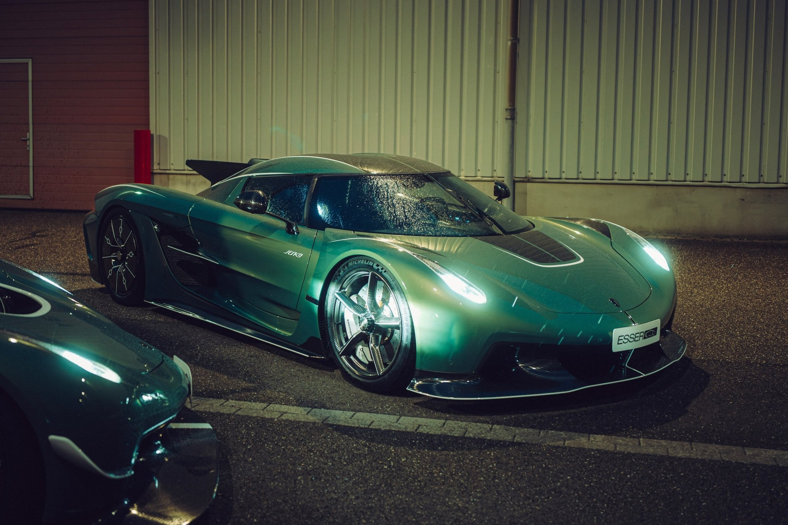
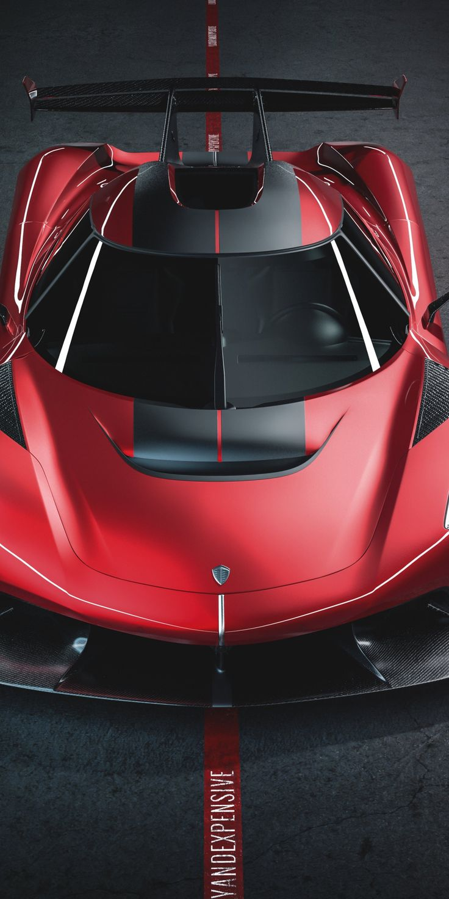
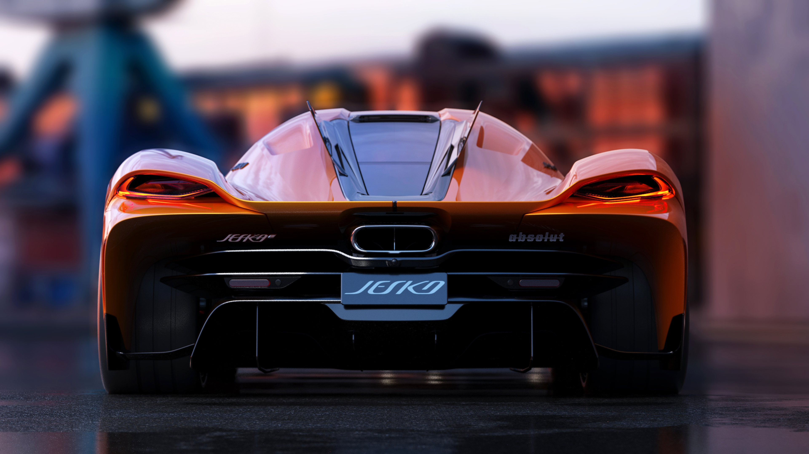
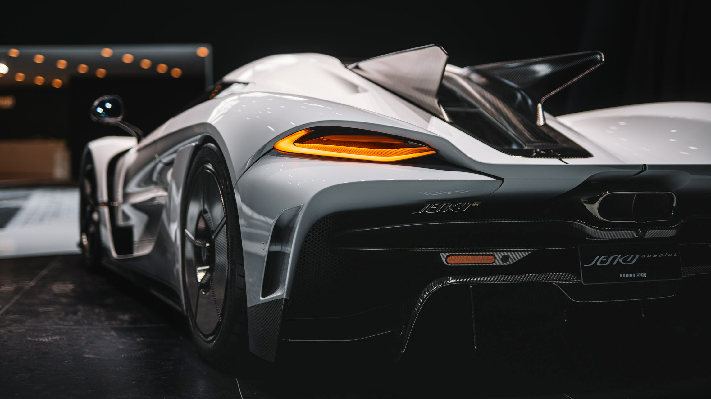
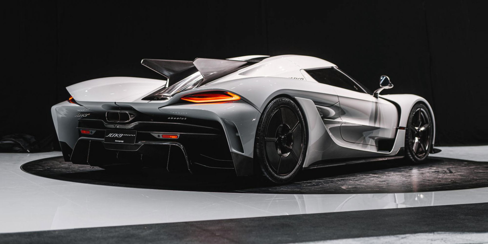
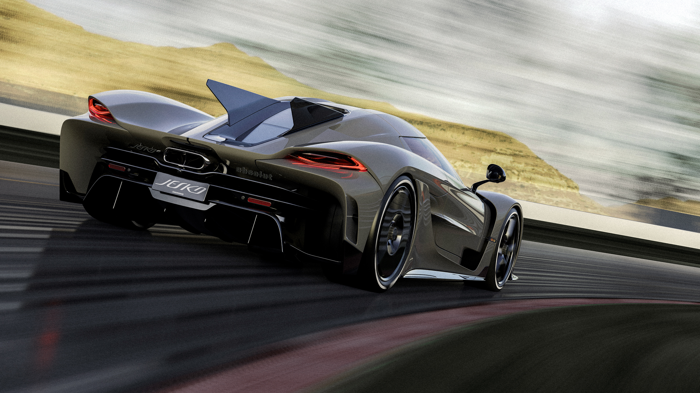

.jpg)
Pursuing Terminal Velocity
Engineered to be the fastest car on Earth, the Jesko Absolut represents the pinnacle of Swedish hypercar innovation. By removing the rear wing and extending the rear canopy, Koenigsegg has achieved a drag coefficient of just 0.278 Cd. Every surface is sculpted to pierce the air, powered by a 1,600 horsepower V8 that pushes the boundaries of physics.
The Jesko Absolut is the fastest Koenigsegg ever made, and according to founder Christian von Koenigsegg, it is the fastest the company will ever attempt to build. While the standard Jesko is a track-focused beast with a massive wing, the Absolut is a masterpiece of streamlined drag reduction.
DESIGNED FOR TOP SPEED
EXTREME SPEED
The Jesko Absolut is powered by a 1280 bhp (1600 bhp on E85), twin turbo charged V8 engine, featuring the world’s lightest V8 crankshaft, weighing just 12.5 kg. This flat-plane 180-degree crankshaft produces more power with greater efficiency while achieving a high 8500 rpm rev limit. Its design allows even firing across engine banks, creating a visceral engine sound. Koenigsegg has also designed super-light connecting rods and pistons to counter the tendency of greater vibrations in flat-plane engines.
Koenigsegg's CFD team went over every detail of the Jesko in a meticulous study in order to minimise drag. The most obvious change made was the removal of the Jesko Attack's massive rear wing, which dropped downforce from 1400kg to 150kg. The target drag coefficient for the Jesko Absolut was 0.28Cd. Our CFD team overachieved, with a final figure of just 0.278 Cd.
While peak pressure occurs in the Jesko Absolut's front radiator, the rest of the car has significantly reduced downforce. Modifications applied to the Jesko Absolut include more streamlined front splitter winglets, re-designed front louvers, an elongated tail, and the addition of aerodynamic, removable wheel covers. Every surface finish is intended to be as slick as possible, to allow air to glide effortlessly over the car.
NEED FOR
.jpg)


DESIGNED FOR
INSPIRED BY FIGHTER JETS
The Koenigsegg Jesko Absolut is less of a car and more of a ground-based interceptor, engineered with the singular obsession of piercing the atmosphere of speed. Its design philosophy mirrors that of a stealth fighter jet, where every millimeter of the chassis is dictated by the relentless demands of aerodynamics.
Over 3000 hours invested in fluid dynamics (CFD)
More than 3000 hours were invested in fluid dynamics to smooth surfaces, reduce drag, and add rear volume to streamline airflow. This is alongside over 5000 hours in design and engineering on the Jesko Absolut, and much more spent on the Jesko Attack.
Drag Coefficent Of just 0.278 Cd
The CFD team meticulously went over every inch and design detail of the car, defining the elements needed to get to the drag coefficient even lower than the target of 0.28 Cd, to just 0.278 Cd.
DESIGNED FOR TOP SPEED
JESKO ABSOLUT SPECIFICATIONS
1600 HP
Output (on E85)
.278 CD
Drag Coefficient
9 SPEED
LS Transmission
8:6:1
Compression
5 LITER
K. Twin-turbo V8
RECORD SMASHING
The Jesko Absolut is specifically designed for incredible speed. It boasts an aggressively sleek silhouette paired with insane powertrain engineering aimed at just one thing: groundbreaking top speed. The Jesko Absolut is unlike anything ever seen in a homologated, series production car.




THE V8 INNOVATIONS
The Light Speed Transmission (LST) comprises nine forward gears and several wet, multi-disc clutches in a compact, ultra-light package. It is capable of gear changes between any gear at near light speed, making the driving experience smooth and seamless.
Read MoreLIGHT SPEED TRANSMISSION
Added aeration means a cooler cylinder, cleaner combustion, and less strain on the engine at top power. The Jesko's V8 is also fitted with the world’s first individual in-cylinder pressure sensor system for production cars, allowing the Engine Management System to operate each cylinder at maximum efficiency.
NEXT-LEVEL POWER
This mix of changes and technological improvements raises the engine’s rev limit to 8500 rpm – and increases the power to 1600 bhp on E85 fuel. When running on regular gasoline, the engine produces 1280 bhp. The Jesko Absolut features Koenigsegg’s most powerful engine, which is also the world's fastest revving engine.
Watch It Rev